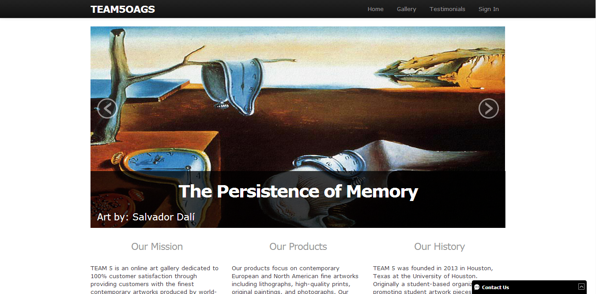
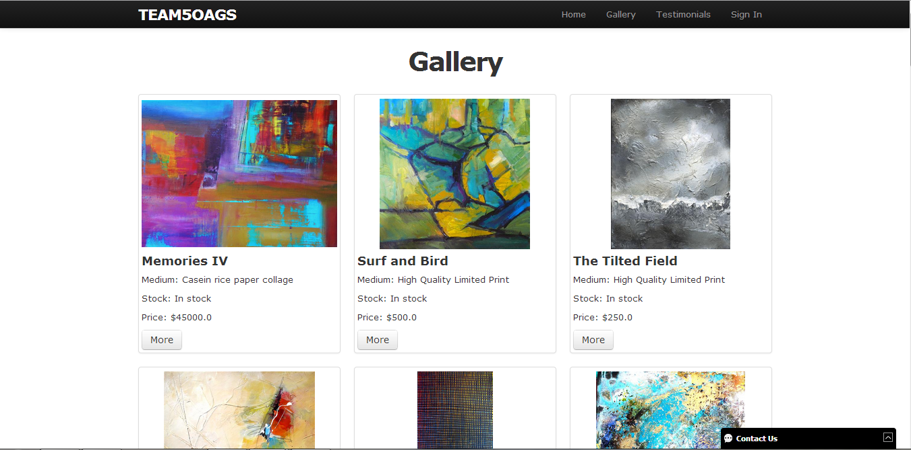
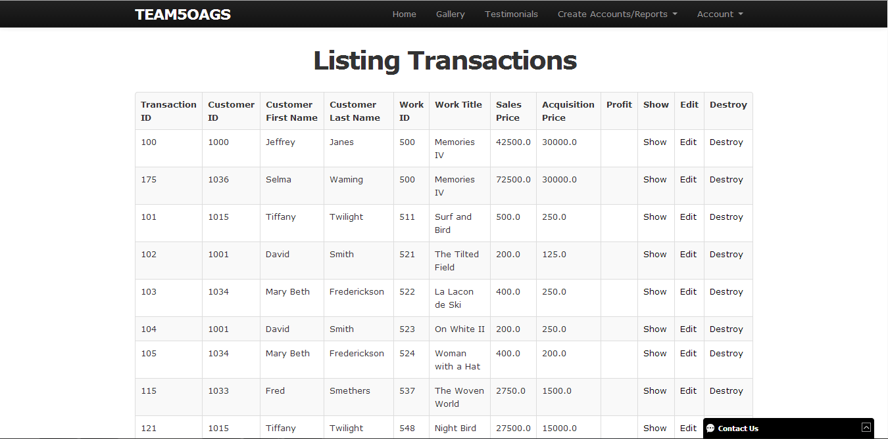

Hello, my name is Muhammad Naviwala. I'm a computer science (software engineering) student at University of Houston.
Projects
Listed below are some of my academic projects and projects that I like to do in my spare time.
TEAM5OAGS
- 
- 
- 
Along a team of 8 members, I was able to create a sample art gallery web application as part of an academic project. Technologies used to create this web application included Ruby on Rails along with a PostgreSQL database, in accordance with the REST and MVC architecture patterns. We used the Agile method of development to minimize risk, and to be adaptable to frequent changes in the requirements.
The deliverables included:
Click here to visit the website
Project X
Created a web 2.0 compatible web application which would provide students “to the point” information about courses offered by Houston Community College, classes offered in the upcoming semester, and programs offered by different departments. Technologies utilized for this project included Ruby on Rails and MySQL database in accordance with MVC architecture patterns.
Socket Programming
Using C programming language, I wrote programs to set up a server and multiple clients.
Fat Ninja
Fat Ninja was my first application for Windows 8. I created this app using Scirra Construct 2.
Official game description from Windows Store: Fat Ninja, a simple yet addicting game. Fat Ninja is a one click/one touch physics based game which keeps you busy. Help Fat Ninja get in shape by making him avoid junk food. Just click on the junk food to destroy it and gain points before time runs out. Make sure you don't destroy the fruits, else game over !
The app can be downloaded by clicking this link.
Code in MIPS
Code in MIPS is an application for Windows 8. I created Code in MIPS using C# to help students learn MIPs. It guides the students through step by step making the language easier to understand. Since most of the students know C++, this app provides side by side comparison of code snippets in MIPS and C++ there by makes MIPs even easier to understand. And yes the code is commented!
The app can be downloaded by clicking this link.
Tic Tac Toe
Using C++, I designed and implemented a Tic-Tac-Toe game for a 3 x 3 board with an artificial intelligent agent to determine the next best move.
About Me
I am a full time computer science student (junior) at University of Houston and a part time programming tutor at Houston Community College. I like to learn new things everyday and actually utilize the knowledge in my everyday life. More specifically I like to learn new programming languages. If I find a programming language fun and interesting I usually get obsessed with it after some time! Right now I am obsessed with Ruby on Rails and I am in the beginning phases of getting addicted to C#. When I create my projects I strive to make them the best and uique among my peers and I create and develop high quality software products.
Programming languages I know (or have used) roughly in order of proficiency: C++/C, Ruby, C#, Python, Java, MIPS, PHP
In my spare time I like to code traditional fun games like tic-tac-toe or jeopardy, or code ascii art animations, or create small web applications, or create applications (currently for Windows 8 and Windows Phone 8 only), or help a friend with his/her project.